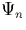

DFT was originally developed by Hohenberg and Kohn [16] and later developed by Kohn and Sham [17]. The crux of this work is the proof that it is valid to use the charge density as the fundamental system variable, i.e., that for a given non-degenerate non-polarised ground state wavefunction, there is a unique electron density. Thus is a unique functional of the charge density, n, and hence the energy E is uniquely defined by n.
We first define for a given wavefunction, , a Hamiltonian, Hn given by
Hn = T + U + Vn.
The proposal is that the ground state electron density is in unique correspondence with the external potential, Vn (T and U are the common kinetic and interaction energy operators respectively). If this was not the case there would be two or more such potentials, say, V1 and V2 having the same n. By the Rayleigh-Ritz variational principle for the ground state energy, this would imply that
However, the expression is equally valid with the terms reversed,
Adding these two inequalities gives
E1 + E2 < E1 + E2,
which is clearly a contradiction unless the energies are degenerate.
This remarkable proof shows that since the charge density can unambiguously specify the external potential, then contained within the charge density is the total information about the stationary system; eigenvalues, wavefunctions, Hamiltonians, etc. Thus what was a 4M variable problem (where M is the number of electrons, each one having three Cartesian variables and electron spin) is now reduced to the four variables needed to define the charge density at a point.
It is now theoretically possible to write an energy functional in terms of the charge density,
| E[n] = Ei-i + Ee-i + F[n(r)], | (6) |
where F[n(r)] is a universal functional of density; i.e., applying the variational principle, when n(r) corresponds exactly to that induced by the external potential, the total energy functional will be at a minimum, the ground state energy. In principle, at this stage this formalism is still exact.
F[n(r)] can be broken down into its components,
| (7) |
where the first term is the Hartree energy. The simplest approximation to the kinetic term comes from Thomas Fermi theory [18],
However, for an exact form we can expand the kinetic energy to give
T is the kinetic energy of a set of non-interacting particles with a given charge density. However there is also a term, Exc, the exchange-correlation energy, that includes all the kinetic terms due to interactions within the gas. This includes exchange energies discussed previously, as well as correlation energy. The electrons will tend to dynamically repel other electrons from their region of space through Coulombic repulsion, creating a `correlation hole', and this is incorporated in the Exc.
Both the kinetic energy, T, and the exchange correlation energy, Exc are harder to express in terms of the charge density; to determine T we have to invoke Kohn-Sham theory, but to express Exc, we commonly use the local density approximation.